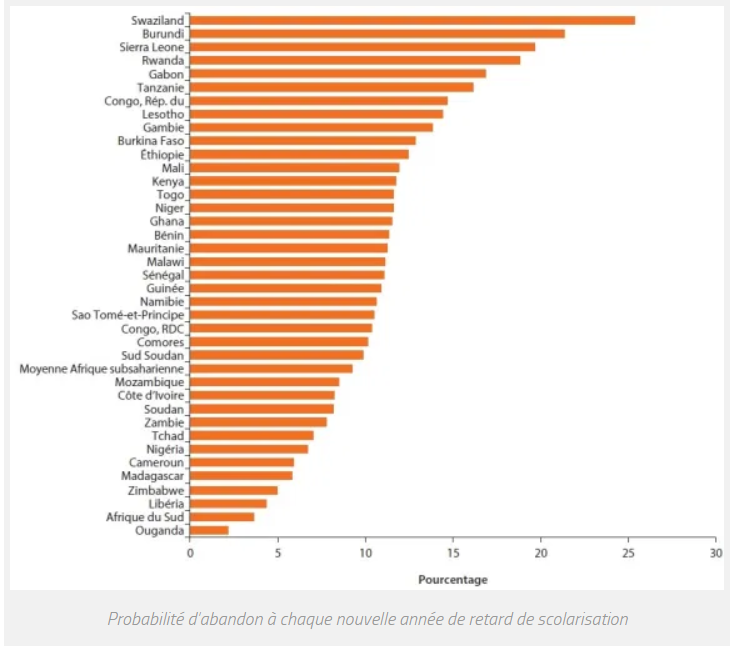

Déscolarisation

Le terme de "déscolarisation" s'est imposé à la fin des années 1990. La déscolarisation est le fait de ne plus du tout fréquenter une école. C'est un processus qui comporte trois étapes ; il commence par des absences à répétition de l'élève (absentéisme) puis peut entraîner un décrochage scolaire qui peut donc se terminer sur une déscolarisation totale de l'élève au sein de l'établissement. La déscolarisation concerne des jeunes de moins de 16 ans qui sont hors du système scolaire, soit parce qu’ils ne fréquentent pas un établissement (malgré leur inscription), soit parce qu’ils ne se sont pas inscrits dans un établissement. La déscolarisation est l’étape finale du décrochage scolaire. Les élèves déscolarisés représentent différents cas de figure, qui peuvent être des élèves non-inscrits dans un établissement ; des élèves pris en charge par des organismes d’aide à l'enfance; et des élèves exclus d’un établissement et qui n’ont pas (encore) trouvé un lieu d’inscription, ou encore des élèves victimes de harcèlement.
La crise du Covid-19 accentue la déscolarisation dans le monde
La non-scolarisation des enfants est un fléau qui touchait quelque 258 millions d’élèves de 6 à 17 ans dans le monde en 2018, selon l'Unesco. Et en cette rentrée 2020, un milliard d’écoliers n’a pas retrouvé le chemin de l’école. Une situation qui pourrait durer.
Seul un tiers des élèves a regagné l’école en cette rentrée 2020 dans le monde. La crise sanitaire liée au Covid-19 entraîne de nombreuses situations d’incertitudes pour les écoliers, privant certains d’école pour une durée inconnue. Les filles sont les premières touchées par cette déscolarisation. En Asie, de nombreuses associations s’inquiètent même de la forte hausse des mariages chez les jeunes mineures ces derniers mois. L'Unesco évoque "une urgence éducative mondiale" et l'Unicef redoute "des répercussions sur les économies et les sociétés pendant plusieurs décennies" si rien n’est fait rapidement.
Un milliard d’enfants sans école à la rentrée
"C’est une fermeture massive d’écoles, sans précédent dans l’Histoire" alerte Sobhi Tawil, directeur de la prospective de l’éducation et de l’innovation à l’Unesco, joint par téléphone. 90% des élèves et étudiants à travers le monde ont été touchés par la fermeture de leur établissement à travers le monde. En cette rentrée, un milliard d’enfants ne va toujours pas à l’école, indique l’Unesco (Organisation des Nations unies pour l’éducation, la science et la culture) dans un récent communiqué. Entre les mois d’août et d’octobre, 900 millions d’enfants (sur les 1,5 milliard scolarisés) effectuent généralement leur retour en classe. Pour cette année, ils et elles ne sont que 561 millions. Une crise de l’éducation "toujours aussi grave" déplore la directrice générale de l’Unesco, Audrey Azoulay. Elle est même en train de s’aggraver. "Avant le Covid-19, explique Sobhi Tawil, plus de 250 millions d’enfants n’étaient pas scolarisés. Six enfants sur dix ne maîtrisaient pas les compétences de base en lecture et en mathématiques, soit parce qu’ils n’allaient pas à l’école, soit en raison d’une scolarité incomplète ou d’une faible qualité d’enseignement." Au lycée, la moitié des élèves ne terminent pas leur cursus. Des chiffres que l’Unesco s’attend à voir augmenter après cette crise sanitaire, d’autant plus qu’il est parfois difficile de faire revenir sur le chemin de l’école des jeunes qui ont arrêté. Les familles les plus pauvres et/ou en milieu rural sont les plus touchées par cette déscolarisation.Les filles encore plus touchées par la déscolarisation
Les premières victimes de la déscolarisation sont les filles. En 2019, Audrey Azoulay déclarait que "selon [les] projections [de l’Unesco], neuf millions de filles en âge de fréquenter le cycle primaire ne seront jamais scolarisées ou ne mettront jamais les pieds dans une salle de classe, contre environ trois millions de garçons."Les filles les plus touchées par cette non-scolarisation vivent en Afrique subsaharienne. L’école permet d’assurer une certaine protection aux filles, notamment aux adolescentes. En dehors du système éducatif, les jeunes mineures font souvent face aux grossesses d’adolescentes, aux mariages précoces et forcés ou encore à la violence. Avec la crise liée au Covid-19, jusqu’à dix millions d’adolescentes scolarisées dans le secondaire risquent de ne pas retourner à l’école, d’après les estimations de l’Unesco et 13 millions de jeunes filles pourraient être mariées en étant mineures dans les dix prochaines années avancent les associations.

En Asie, plusieurs ONG s’inquiètent du nombre très importants de mariages de jeunes filles depuis la pandémie, rapporte l’AFP (Agence France Presse). Ce phénomène avait pourtant reculé dernièrement, grâce justement à des campagnes pour l’accès à l’éducation et aux services de santé. Pour l’ONG Girls Not Brides, les progrès de la dernière décennie pourraient être remis en cause. Par exemple, entre janvier et juin 2020 en Indonésie, 33 000 mariages de mineures ont été autorisés (l’âge légal du mariage a été relevé de 16 à 19 ans en 2019). Sur la totalité de l’année dernière, 22 000 dérogations avaient été accordées… Les familles vulnérables le devenant encore plus avec la pandémie décident de marier leurs filles, faute de pouvoir les nourrir. Le directeur de la campagne "1 Step 2 Stop Child Marriage" en Inde, Rolee Singh, explique ainsi à l’AFP avoir vu "une augmentation des mariages de mineurs pendant le confinement. Le chômage se généralise, les familles peinent à joindre les deux bouts et pensent qu’il vaut mieux marier leurs filles".
Déscolarisation en Afrique
Facteurs à l’origine de la déscolarisation et de l’abandon scolaire
Selon les experts de la Banque mondiale, la déscolarisation et l’abandon scolaire des jeunes subsahariens s’expliquent principalement par 6 grands facteurs:L’abandon scolaire d’un grand nombre de jeune avant le cycle secondaire.
En effet, il a été constaté qu’un nombre croissant de jeunes ne sont jamais inscrits à l’école ou abandonnent avant le cycle secondaire. Ainsi la moitié des 12-24 ne vont pas à l’école et 1 sur 5 n’y ont jamais été inscrits. Cette observation, se vérifie particulièrement dans les pays subsahariens les plus peuplés.Les mariages précoces qui limitent la scolarisation des jeunes filles.
Souvent privées d’éducation en cycle primaire du fait de leur genre, une partie des filles qui y sont quand même inscrites, dès lors qu’elles sont mariées, obtiennent de moins bons résultats scolaires que les garçons. Ainsi, les filles de 15-24 ans mariées sont plus susceptibles de travailler que des garçons d’âge équivalent.
La vie en zone rurale
La vie en zone rurale accroit systématiquement la probabilité de ne pas être scolarisé, souvent du fait de l’absence de structures scolaires primaires et secondaires à proximité. Ainsi un jeune urbain de la tranche d’âge 12-14 ans à une probabilité d’être scolarisé 8% supérieur à celle d’un jeune rural de la même tranche d’âge.
Le faible niveau d’éducation des parents et ses conséquences chez certains jeunes.
En effet, les jeunes de 12-14 ans dont les parents ont achevé leurs études secondaires sont 20% plus susceptibles d’être scolarisés que les enfants issus de familles dont les parents sont peu ou pas instruits.
Le nombre d’adultes qui disposent d’un travail dans le ménage.
Avoir un adulte ayant une activité professionnelle dans le foyer accroit de 14% la probabilité que les plus jeunes du foyer soient scolarisés. Elle s’accroit de 21% si 2 adultes du foyer ont une activité professionnelle.
La difficulté d’accès à l’école et la médiocrité de l’enseignement.
Dans les campagnes notamment, des parents s’abstiennent d’envoyer leurs enfants à l’école car trop éloignée et le parcours pour s’y rendre met en insécurité les enfants. Par ailleurs, l’absence de motivation de certains enseignants, leurs absences répétées ou le manque d’un minimum de confort dans les établissements accélèrent aussi le décrochage scolaire.
Solutions face à la déscolarisation et de l’abandon scolaire ?
Pour combattre chacun de ces problèmes, la Banque mondiale encourage les gouvernements d’Afrique subsaharienne à agir sur la rétention des jeunes dans le système scolaire, la remédiation aux difficultés précités tant par l’enseignement formel que par l’enseignement extrascolaire et l’amélioration de l’insertion professionnel des jeunes.Maintenir les jeunes à l’école
Les experts de la Banque mondiale encourage à mise en œuvre de mesures de prévention précoce par les gouvernements. Puisqu’il a été identifié qu’un grand nombre de jeunes sortent du circuit scolaire à l’entrée au secondaire, ils préconisent d’agir avant ce terme. Si rendre obligatoire l’éducation primaire et secondaire permet d’accroitre les taux d’inscriptions scolaires, l’étude souligne cependant qu’elle a aussi un effet dépresseur puisqu’on observe simultanément une baisse de la qualité et une détérioration des normes académiques.Remédiation par l’enseignement scolaire ou extrascolaire
« Pour les jeunes déjà déscolarisés, l’enseignement extrascolaire, comme les programmes d’équivalence, est probablement le moyen le plus efficace pour les inciter à reprendre et à achever leurs études. Les dispositifs qui donnent les meilleurs résultats sont ceux qui proposent de multiples points d’entrée et de sortie, en étroite collaboration avec le secteur de l’éducation formelle ».Insertion sur le marché du travail
L’étude fait le constat que plusieurs programmes nationaux ont permis d’injecter les fonds pour le financement de diverses formations mais les bénéficiaires ne trouvent pas toujours un emploi à l’issue de leurs formations.
La majorité des emplois en Afrique subsaharienne étant dans le secteur informel, l’étude encourage les Etats à en tenir compte dans les formations délivrées puisque inévitablement certains bénéficiaires des formations exerceront un emploi informel et/ou indépendant. Par ailleurs, une gestion efficace et coordination des emplois publics favoriserait une meilleure insertion dans l’administration publique.
Selon la Banque mondiale, une diversification de l’offre et des filières de formation est favorable à l’insertion professionnel puisque préparant à une large gamme de débouchés.
L’étude souligne par ailleurs que l’attribution de bourses et des aides diverses à la fin du cycle secondaire tout en tenant informé les apprenants et leurs familles a pour effet d’accroitre le nombre de jeunes qui achèvent leur cycle secondaire. Elle encourage par ailleurs les Etats à prendre en charge les frais de scolarité dans les écoles privées. Améliorer la qualité des enseignements et des infrastructures scolaires contribuerait aussi à retenir les apprenants dans le système scolaire. L’implication et la participation des parents à la gestion des écoles est un puissant facteur de rétention des apprenants.
Enfin, les Etats devraient lutter contre les scolarités tardives où l’on rencontre un grand nombre d’abandons et développer voire même généraliser les programmes de développement de la petite enfance dont on a pu mesurer l’efficacité.

La Banque mondiale encourage ainsi à une coordination nationale et régionale des programmes d’enseignement extrascolaires et à une pérennité du financement afin de permettre à ces programmes de produire des résultats.
S’il a été mesuré que 57% des jeunes africains francophones n’atteignent jamais le secondaire, les programmes dits de la « seconde chance » sont devenus indispensables pour ramener ces jeunes dans l’enseignement et les préparer à un métier.